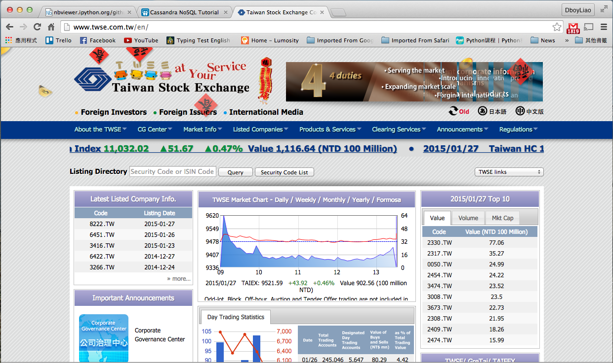
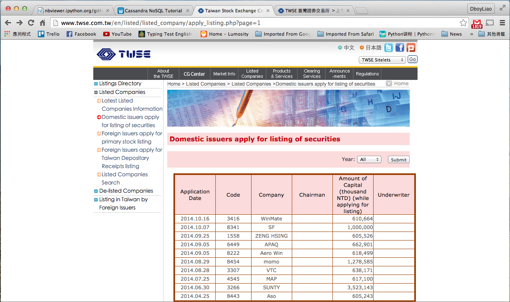
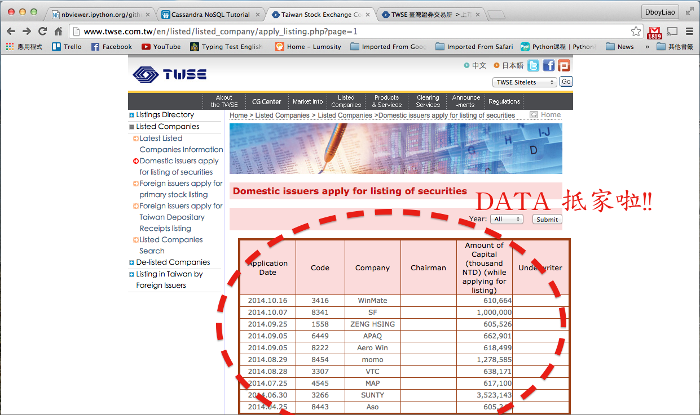
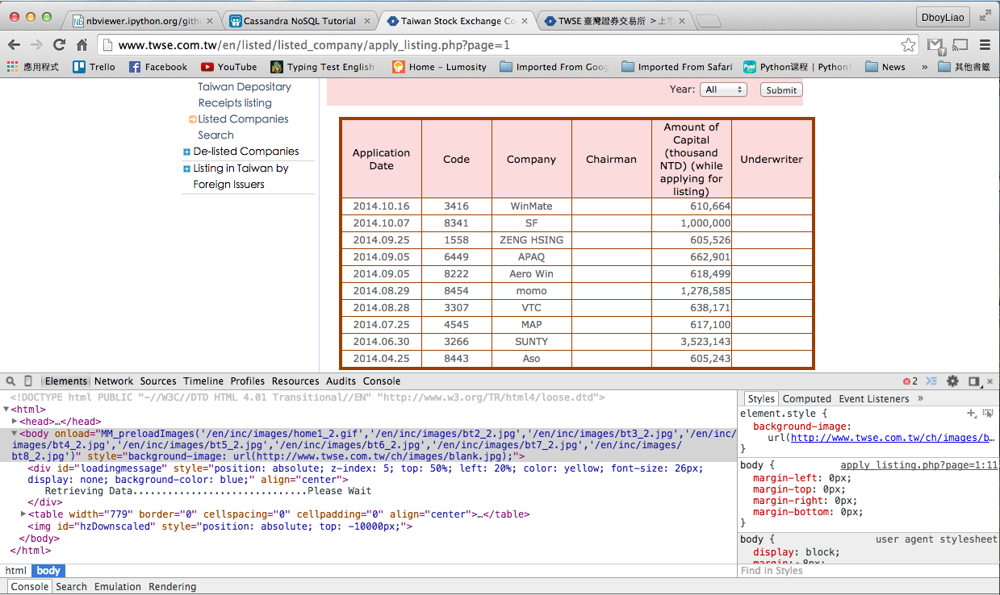
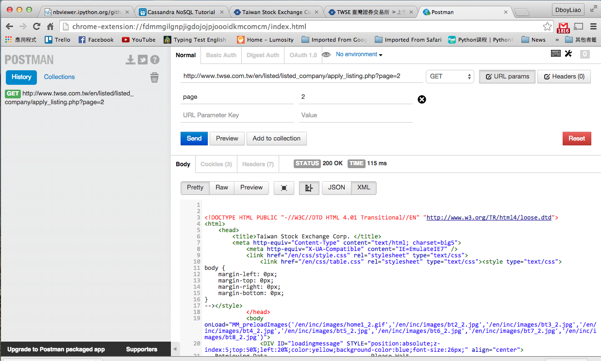

R 是個開源免費的軟體，因此有非常多人 (駭客們) 幫它撰寫各式各樣的套件。
我們要去哪裡看說 R 有什麼套件呢?
主要有兩大管道:
- 那不就好棒棒 (拍手) ....
- 到底我們該怎麼使用這些套件呢 = =?
Chia-Chi Chang, Yin-Chen Liao
R 是個開源免費的軟體，因此有非常多人 (駭客們) 幫它撰寫各式各樣的套件。
我們要去哪裡看說 R 有什麼套件呢?
主要有兩大管道:
為了使用這些套件，我們必須先安裝它們。
為了使用這些套件，我們必須先安裝它們。
install.packages("XML")
##
## The downloaded binary packages are in
## /var/folders/5c/0p5zr2_n4xvbt2j6hkqczhph0000gn/T//Rtmpf9Hxhx/downloaded_packages
很好! 你已經成功安裝 XML 套件了。
為了把包含在 XML 這個套件中的相關函數"引入"供你差遣(?)，我們需要 library() 這個函數。
library("XML")
## Warning: package 'XML' was built under R version 3.1.2




MOPS_URL.TWSE_ALL = "http://www.twse.com.tw/en/listed/listed_company/apply_listing.php?page=1"
web_page = htmlParse(MOPS_URL.TWSE_ALL,encoding="big5")
data = readHTMLTable(web_page, which=6, stringsAsFactors=F, header = T)
names(data) <- c("Application Date", "Code", "Chairman", "Amount of Capital", "Underwriter")
data <- data[-1,]
head(data, n=3)
## Application Date Code Chairman Amount of Capital Underwriter NA
## 2 2014.10.16 3416 WinMate 610,664
## 3 2014.10.07 8341 SF 1,000,000
## 4 2014.09.25 1558 ZENG HSING 605,526
MOPS_URL.TWSE_ALL = "http://www.twse.com.tw/en/listed/listed_company/apply_listing.php?page=1"
web_page = htmlParse(MOPS_URL.TWSE_ALL,encoding="big5")
data = readHTMLTable(web_page, which=6, stringsAsFactors=F, header = T)
names(data) <- c("Application Date", "Code", "Chairman", "Amount of Capital", "Underwriter")
data <- data[-1,]
head(data, n=3)
## Application Date Code Chairman Amount of Capital Underwriter NA
## 2 2014.10.16 3416 WinMate 610,664
## 3 2014.10.07 8341 SF 1,000,000
## 4 2014.09.25 1558 ZENG HSING 605,526
Magic!!

